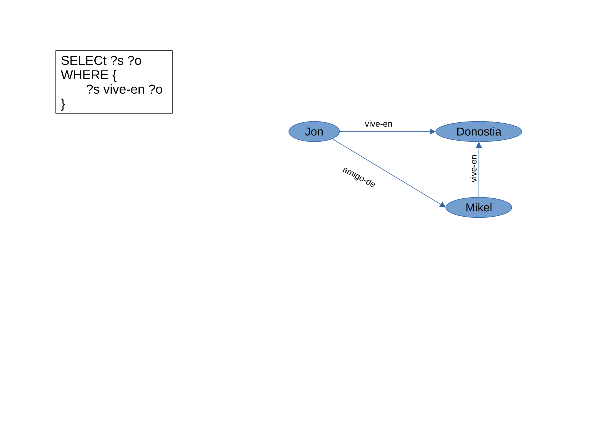
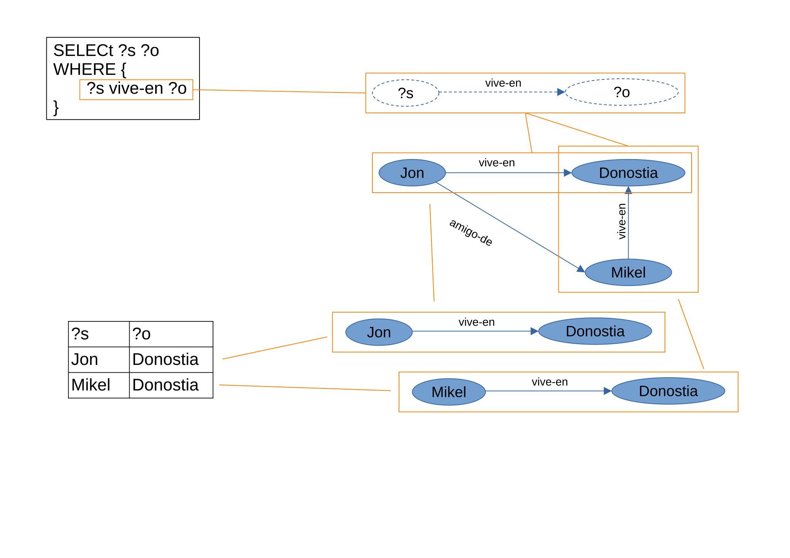

SPARQL
Mikel Egaña Aranguren
mikel-egana-aranguren.github.io

Mikel Egaña Aranguren
Mikel Egaña Aranguren
mikel-egana-aranguren.github.io
https://github.com/mikel-egana-aranguren/ABD

SPARQL Protocol and RDF Query Language
Learning SPARQL (libro)
Wikidata Query Service (con ejemplos)


[ejemplos/Museoak.rdf]
[ejemplos/./graphdb]

# Prefixes
PREFIX rdf: <http://www.w3.org/1999/02/22-rdf-syntax-ns#>
PREFIX rdfs: <http://www.w3.org/2000/01/rdf-schema#>
PREFIX owl: <http://www.w3.org/2002/07/owl#>
PREFIX foaf: <http://xmlns.com/foaf/0.1/>
PREFIX gip_prop: <http://gipuzkoa.eus/prop/>
PREFIX gip: <http://gipuzkoa.eus/resource/>
PREFIX dbpedia: <http://dbpedia.org/ontology/>
PREFIX gov: <http://vocab.data.gov/def/drm#>

# Variables que queremos recibir (Todas = "*")
SELECT ?sujeto ?clase
# Patrón del grafo que queremos extraer del grafo mayor
WHERE {
?sujeto gip_prop:bizilekua gip:donostia .
?sujeto rdf:type ?clase
}
SELECT ?langile ?bizilekua
WHERE {
# Tiene que ser una persona
?langile rdf:type foaf:person .
# Tiene que vivir en algun sitio
?langile gip_prop:bizilekua ?bizilekua
}
SELECT ?langile ?bizilekua
WHERE {
# Tiene que ser una persona
?langile rdf:type foaf:person .
# Puede vivir en un sitio o no
OPTIONAL {
?langile gip_prop:bizilekua ?bizilekua
}
}
SELECT ?entitatea ?izena
WHERE {
{ ?entitatea rdfs:label ?izena }
UNION
{ ?entitatea foaf:name ?izena }
}
SELECT ?pertsona ?izena
WHERE {
?pertsona foaf:name ?izena
}
ORDER BY DESC (?izena) # Puede ser DESC o ASC
SELECT ?pertsona ?izena
WHERE {
?pertsona foaf:name ?izena
}
ORDER BY DESC (?izena)
LIMIT 3
SELECT ?pertsona ?izena
WHERE {
?pertsona foaf:name ?izena
}
ORDER BY DESC (?izena)
LIMIT 3
OFFSET 3 # OFFSET 6
SELECT ?museoa ?langile_kop
WHERE {
?museoa gip_prop:kopurua ?langile_kop .
FILTER (?langile_kop > "800"^^xsd:int)
}
SELECT ?langile ?izena
WHERE {
?langile foaf:name ?izena .
FILTER regex(?izena,'Mi.*')
}
Lógica: !, &&, ||
Cálculos: +, -, *, /
Comparaciones: =, !=, >,<
Tests SPARQL: isURI, isBlank, isLiteral, bound
Acceder a datos: str, lang, datatype
Más: sameTerm, langMatches, regex, ...
SELECT ?lantokia # DISTINCT
WHERE {
?person rdf:type foaf:person .
?person gov:worksFor ?lantokia
}
ASK
WHERE {
?person gov:worksFor gip:gugenheim
}
DESCRIBE <http://gipuzkoa.eus/resource/mikel-aranguren>
[Visual]
Grafo: conjunto de triples
El conjunto entero se identifica con una URI (diferente de la de los datos)
Todas las Triple Stores tienen un Default Graph
INSERT DATA{
GRAPH <http://example/bookStore> {
<http://example/book1> gip_prop:price 42
}
}
SELECT *
FROM <http://example/bookStore> # Probar sin URI grafo
WHERE {
?s ?p ?o .
}
COUNT: contar elementos
SUM: suma de valores
AVG: promedio
MIN / MAX: mínimo y máximo
GROUP_CONCAT: concatenar valores
SAMPLE: obtener un valor de ejemplo
SELECT (COUNT(?person) AS ?total)
WHERE {
?person rdf:type foaf:person
}
Agrupar resultados por valores de una variable
SELECT ?ciudad (COUNT(?museo) AS ?numMuseos)
WHERE {
GRAPH <urn:count> {
?museo rdf:type dbpedia:museum ;
gip_prop:kokalekua ?ciudad .
}
}
GROUP BY ?ciudad
ORDER BY DESC(?numMuseos)
[ejemplos/Museoak-count.ttl]
Filtrar grupos después de la agregación
SELECT ?ciudad (COUNT(?museo) AS ?numMuseos)
WHERE {
GRAPH <urn:count> {
?museo rdf:type dbpedia:museum ;
gip_prop:kokalekua ?ciudad .
}
}
GROUP BY ?ciudad
HAVING (COUNT(?museo) > 1)
ORDER BY DESC(?numMuseos)
Asignar valores a variables dentro de la consulta
SELECT ?person ?fullName
WHERE {
GRAPH <urn:name-surname>{
?person foaf:firstName ?first ;
foaf:lastName ?last .
}
BIND(CONCAT(?first, " ", ?last) AS ?fullName)
}
[ejemplos/Museoak-name-surname.ttl]
CONCAT: concatenar strings
STRLEN: longitud de string
SUBSTR: subcadena
UCASE / LCASE: mayúsculas / minúsculas
STRSTARTS / STRENDS / CONTAINS: búsqueda en strings
REPLACE: reemplazar texto
REGEX: expresiones regulares
SELECT ?museo ?nombre
WHERE {
?museo rdf:type dbpedia:museum ;
rdfs:label ?nombre .
FILTER REGEX(?nombre, "Gugen")
}
ABS: valor absoluto
ROUND / CEIL / FLOOR: redondeo
RAND: número aleatorio
Operadores: +, -, *, /
NOW(): fecha y hora actual
YEAR / MONTH / DAY: extraer componentes
HOURS / MINUTES / SECONDS: hora específica
Proporcionar valores inline para variables (Útil para consultas parametrizadas)
SELECT ?museo ?obras
WHERE {
VALUES ?museo {
<http://gipuzkoa.eus/resource/gugenheim>
<http://gipuzkoa.eus/resource/san-telmo>
}
?museo gip_prop:kopurua ?obras
}
Excluir resultados que coinciden con un patrón: todos los museos menos los museos que tienen más de 300 obras
SELECT ?museo ?obras
WHERE {
?museo rdf:type dbpedia:museum .
MINUS {
?museo gip_prop:kopurua ?obras .
FILTER (?obras > 300)
}
}
Filtrar basándose en la no existencia de un patrón
EXISTS/NOT EXISTS: filtro, no elimina bindings
MINUS: elimina soluciones completas
NOT EXISTS es más eficiente para validación
MINUS es más útil para exclusión de patrones complejos
^: inverso (ex:parent^ encuentra hijos)
*: cero o más (ex:knows* para red de conocidos)
+: uno o más (ex:subClassOf+ para jerarquía)
!: cualquier relacion menos esa
?: opcional (cero o uno)
|: alternativa (ex:email|ex:phone)
/: secuencia (ex:livesIn/ex:country)
SELECT ?person ?city
WHERE {
?person rdf:type foaf:person .
?person gov:worksFor/gip_prop:kokalekua ?city .
}
Estándar del W3C (=HTML, !=SQL)
DELETE DATA {
<http://gipuzkoa.eus/resource/aitor-labajo>
rdf:type foaf:person
}
# DESCRIBE <http://gipuzkoa.eus/resource/aitor-labajo>
DELETE {?person rdf:type foaf:person}
WHERE {?person foaf:name ?name}
#SELECT * WHERE {
# ?person rdf:type foaf:person
#}
INSERT DATA {
gip:aitor-labajo rdf:type gip:hiritar
}
# DESCRIBE gip:aitor-labajo
INSERT {
gip:jon-alfaro rdf:type ?type .
}
WHERE {
gip:aitor-labajo rdf:type ?type .
}
# DESCRIBE <http://gipuzkoa.eus/resource/jon-alfaro>
Actualizar email de manera transaccional:
DELETE { ?person ex:email ?oldEmail }
INSERT { ?person ex:email ?newEmail }
WHERE {
?person foaf:name "Mikel" ;
ex:email ?oldEmail .
BIND("mikel@new.com" AS ?newEmail)
}
CONSTRUCT {
?langile rdf:type gip:gugenheim_langilea
}
WHERE {
?langile gov:worksFor gip:gugenheim
}
LOAD <https://rest.uniprot.org/uniprotkb/P01308.rdf>
INTO GRAPH <urn:uniprot>
CLEAR GRAPH <urn:uniprot>
# CLEAR DEFAULT
# CLEAR ALL
DROP GRAPH <http://example.org/myGraph>
# DROP ALL
COPY: copiar un grafo a otro (sobreescribe destino)
MOVE: mover grafo (copia + elimina origen)
ADD: añadir triples al destino (sin sobreescribir)
COPY <urn:name-surname>
TO <urn:nombre-apellidos>
COPY DEFAULT
TO <urn:backup>
Estándar del W3C (=HTML, !=SQL)
HTTP GET con parámetro query: GET /sparql?query=SELECT...
HTTP POST (para queries largas): POST /sparql con body URL-encoded
Content negotiation (Accept header): application/sparql-results+json, text/csv, application/rdf+xml, text/turtle
[ejemplos/post.sh]
Python: RDFLib, SPARQLWrapper (ejemplos/sparql.py)
Java: Apache Jena, RDF4J
Estándar del W3C (=HTML, !=SQL)
Proporciona metadatos sobre endpoints SPARQL para ayudar a los clientes:
curl -H "Accept: text/turtle" https://dbpedia.org/sparql/
[ejemplos/dbpedia_service_description.ttl]
Estándar del W3C (=HTML, !=SQL)
Permiten consultar múltiples endpoints SPARQL en una sola query
Combinar datos de fuentes distribuidas usando la palabra clave SERVICE
INSERT DATA {
<http://gipuzkoa.eus/resource/bilbo> owl:sameAs <http://dbpedia.org/resource/Bilbao> .
}
SELECT ?pop
WHERE {
gip:bilbo owl:sameAs ?town .
SERVICE <https://dbpedia.org/sparql/> {
?town <http://dbpedia.org/ontology/populationTotal> ?pop .
}
}
Estándar del W3C (=HTML, !=SQL)
Gestionar grafos RDF mediante HTTP:
Endpoint base: según configuración
Parámetros:
graph=<URI>: Especifica el grafo con nombregraph: Operación sobre el grafo por defectoContent-Type: RDF/XML, Turtle, N-Triples, etc.
[ejemplos/graph_store_protocol.sh]
| Aspecto | Graph Store HTTP | SPARQL UPDATE |
|---|---|---|
| Granularidad | Grafo completo | Triples individuales |
| Interfaz | REST/HTTP | SPARQL query |
| Uso típico | Reemplazar versiones enteras | Modificaciones precisas |
| Formato | RDF (TTL, RDF/XML, etc.) | SPARQL INSERT/DELETE |